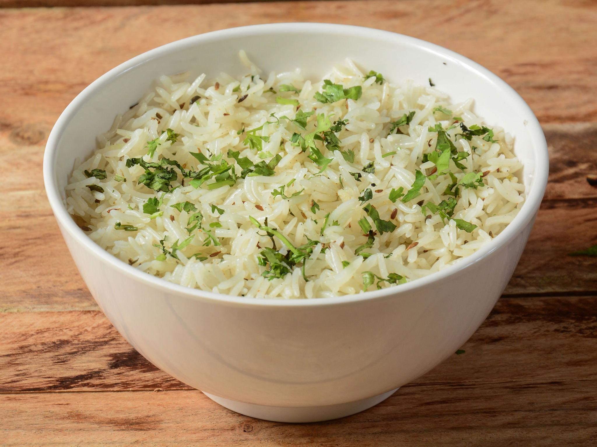

Ingredients
- 1 cup basmati rice
- 2 cups water
- 1 tbsp ghee or oil
- 1 tsp cumin seeds (jeera)
- 1 bay leaf
- 2 cloves
- Salt to taste
- Fresh coriander (optional)
Jeera Rice
- Wash basmati rice and soak for 15 minutes.
- Heat ghee in a pan.
- Add cumin seeds, bay leaf and cloves.
- Let them crackle for a few seconds.
- Add soaked rice and sauté for 1 minute.
- Add water and salt.
- Cover and cook until rice becomes soft.
- Garnish with coriander and serve hot.

Ingredients
- 1 cup basmati rice
- 2 cups water
- 1 tbsp oil or ghee
- 1 tsp cumin seeds
- 1 bay leaf
- 1 small onion
- 1/2 cup mixed vegetables
- 1/2 tsp garam masala
- Salt to taste
Veg Pulao
- Wash basmati rice and soak for 15 minutes.
- Heat oil or ghee in a pan or cooker.
- Add cumin seeds and bay leaf.
- Add sliced onions and sauté until golden.
- Add mixed vegetables and cook for 2–3 minutes.
- Add soaked rice and stir gently.
- Add water, salt and garam masala.
- Cover and cook until the rice is soft and fluffy.
- Garnish with coriander and serve hot.

Ingredients
- 1 cup basmati rice
- 2 cups water
- 1 tbsp oil
- 1 tsp mustard seeds
- 8–10 curry leaves
- 2 green chilies (chopped)
- 2 tbsp lemon juice
- Salt to taste
Lemon Rice
- Wash basmati rice and cook it with water.
- Let the cooked rice cool slightly.
- Heat oil in a pan.
- Add mustard seeds and let them crackle.
- Add curry leaves and chopped green chilies.
- Sauté for a few seconds.
- Add the cooked rice and mix well.
- Add lemon juice and salt, then serve.

Ingredients
- 2 cups whole wheat flour
- 3/4 cup water
- 1 pinch salt
- 1 tsp oil
- Extra flour for rolling
- Butter (optional)
- Ghee (optional)
- Dry flour for dusting
Roti
- Take wheat flour in a bowl.
- Add salt and mix well.
- Gradually add water and knead soft dough.
- Rest the dough for 10 minutes.
- Divide dough into small balls.
- Roll each ball into a thin circle.
- Cook on a hot tawa until both sides brown.
- Apply butter or ghee and serve.

Ingredients
- 2 cups all-purpose flour
- 1/2 cup yogurt
- 1 tsp sugar
- 1 tsp baking powder
- 1/2 tsp salt
- 2 tbsp oil
- Water as needed
- Butter for brushing
Naan
- Mix flour, sugar, salt and baking powder.
- Add yogurt and oil.
- Add water and knead soft dough.
- Cover and rest for 1 hour.
- Divide dough into small balls.
- Roll each ball into oval shape.
- Cook on hot tawa until golden spots appear.
- Brush with butter and serve.

Ingredients
- 1 bread loaf
- 3 tbsp butter
- 3 cloves garlic (minced)
- 1 tbsp chopped parsley
- 1 pinch salt
- 1 pinch black pepper
- 1 tbsp olive oil
- Grated cheese (optional)
Garlic Bread
- Preheat oven to 180°C.
- Mix butter, garlic and parsley.
- Add salt and black pepper.
- Slice the bread loaf.
- Spread garlic butter on each slice.
- Drizzle a little olive oil.
- Bake for 8–10 minutes until crispy.
- Add cheese if desired and serve.

Ingredients
- 1 apple (chopped)
- 1 banana (sliced)
- 1 cup papaya cubes
- 1/2 cup pomegranate seeds
- 1/2 cup grapes
- 1 tbsp honey
- 1 tsp lemon juice
- Few mint leaves
Fruit Salad
- Wash all fruits properly.
- Chop apple and papaya into small cubes.
- Slice the banana.
- Add grapes and pomegranate seeds.
- Put all fruits into a large bowl.
- Add honey and lemon juice.
- Mix gently so fruits don’t break.
- Garnish with mint leaves and serve.

Ingredients
- 1 cucumber (chopped)
- 2 tomatoes (chopped)
- 1/2 onion (sliced)
- 1/2 cup feta cheese
- 1/4 cup olives
- 2 tbsp olive oil
- 1 tbsp lemon juice
- Salt and pepper
Greek Salad
- Wash cucumber and tomatoes.
- Chop cucumber into small cubes.
- Cut tomatoes into medium pieces.
- Slice the onion thinly.
- Add all vegetables to a bowl.
- Add olives and feta cheese.
- Drizzle olive oil and lemon juice.
- Add salt, pepper and toss gently.

Ingredients
- 1 cup boiled sprouts
- 1 small onion (chopped)
- 1 tomato (chopped)
- 1 green chili (chopped)
- 1 tbsp lemon juice
- 1 tbsp chopped coriander
- 1 pinch chaat masala
- Salt to taste
Sprout Salad
- Boil sprouts for 5 minutes.
- Drain the water and let them cool.
- Chop onion and tomato.
- Chop green chili finely.
- Add sprouts to a bowl.
- Add chopped vegetables.
- Add lemon juice, chaat masala and salt.
- Mix well and garnish with coriander.

Ingredients
- 1 cup basmati rice
- 250 g chicken
- 1 onion (sliced)
- 1 tomato (chopped)
- 1 tbsp ginger garlic paste
- 1 tsp biryani masala
- 2 tbsp yogurt
- Salt to taste
Chicken Biryani
- Wash and soak basmati rice for 20 minutes.
- Heat oil in a pan and fry sliced onions.
- Add ginger garlic paste and sauté.
- Add chicken pieces and cook for a few minutes.
- Add tomatoes, yogurt and biryani masala.
- Cook until chicken is half done.
- Add soaked rice and required water.
- Cook covered until rice is soft and serve.

Ingredients
- 1 cup basmati rice
- 1/2 cup mixed vegetables
- 1 onion (sliced)
- 1 tomato (chopped)
- 1 tbsp ginger garlic paste
- 1 tsp biryani masala
- 2 tbsp yogurt
- Salt to taste
Veg Biryani
- Wash and soak basmati rice for 20 minutes.
- Heat oil in a pan and sauté sliced onions.
- Add ginger garlic paste and cook briefly.
- Add chopped tomatoes and cook until soft.
- Add mixed vegetables and cook for 3 minutes.
- Add yogurt and biryani masala.
- Add soaked rice and water.
- Cover and cook until rice is fluffy.

Ingredients
- 1 cup basmati rice
- 200 g paneer cubes
- 1 onion (sliced)
- 1 tomato (chopped)
- 1 tbsp ginger garlic paste
- 1 tsp biryani masala
- 2 tbsp yogurt
- Salt to taste
Paneer Biryani
- Wash and soak basmati rice for 20 minutes.
- Heat oil and fry sliced onions.
- Add ginger garlic paste and sauté.
- Add chopped tomatoes and cook well.
- Add paneer cubes and cook gently.
- Add yogurt and biryani masala.
- Add soaked rice and water.
- Cook covered until rice is done.

Ingredients
- 250 g boneless chicken
- 1/2 cup gram flour (besan)
- 1 tbsp ginger garlic paste
- 1/2 tsp red chili powder
- 1/2 tsp turmeric powder
- 1/2 tsp garam masala
- Salt to taste
- Oil for deep frying
Chicken Pakora
- Wash and cut chicken into small pieces.
- Take chicken in a bowl.
- Add ginger garlic paste and spices.
- Add gram flour and salt.
- Mix everything well.
- Heat oil in a pan.
- Drop small portions of the mixture into hot oil.
- Fry until golden brown and crispy.

Ingredients
- 250 g boneless chicken
- 1/2 cup yogurt
- 1 tbsp ginger garlic paste
- 1 tsp red chili powder
- 1/2 tsp turmeric powder
- 1 tsp garam masala
- 1 tbsp lemon juice
- Salt to taste
Chicken Tikka
- Wash chicken pieces properly.
- Take yogurt in a bowl.
- Add ginger garlic paste and spices.
- Add lemon juice and salt.
- Mix well to make marinade.
- Add chicken pieces and coat well.
- Marinate for at least 30 minutes.
- Grill or cook on pan until done.

Ingredients
- 2 eggs
- 1 paratha or roti
- 1 small onion (sliced)
- 1 green chili (chopped)
- 1 tbsp tomato sauce
- 1 tbsp mayonnaise
- Salt to taste
- 1 tsp oil
Egg Roll
- Heat oil in a pan.
- Beat eggs in a bowl with salt.
- Pour egg mixture onto the pan.
- Place the paratha over the egg.
- Cook both sides well.
- Add sliced onions and green chili.
- Add sauce and mayonnaise.
- Roll the paratha and serve hot.

Ingredients
- 250 g boneless chicken
- 2 tbsp cornflour
- 1 tbsp ginger garlic paste
- 1 tbsp soy sauce
- 1 tsp red chili sauce
- 1 onion (chopped)
- 1 capsicum (chopped)
- Salt to taste
Chicken Manchurian
- Cut chicken into small pieces.
- Mix chicken with cornflour and salt.
- Deep fry chicken until golden.
- Heat oil in another pan.
- Add ginger garlic paste and sauté.
- Add onion and capsicum.
- Add soy sauce and chili sauce.
- Add fried chicken and mix well.

Ingredients
- 1 cup cooked rice
- 150 g chicken (shredded)
- 1 egg
- 1/4 cup chopped carrots
- 1/4 cup chopped beans
- 1 tbsp soy sauce
- 1 tsp black pepper
- Salt to taste
Chicken Fried Rice
- Heat oil in a wok.
- Scramble the egg and keep aside.
- Add chicken pieces and cook well.
- Add chopped vegetables.
- Stir fry for 2–3 minutes.
- Add cooked rice.
- Add soy sauce, pepper and salt.
- Mix well and serve hot.

Ingredients
- 250 g boneless chicken
- 2 tbsp cornflour
- 1 tbsp soy sauce
- 1 tbsp chili sauce
- 1 onion (cubed)
- 1 capsicum (cubed)
- 2 green chilies
- Salt to taste
Chilli Chicken
- Cut chicken into small cubes.
- Mix with cornflour and salt.
- Deep fry chicken pieces.
- Heat oil in another pan.
- Add onions, capsicum and green chilies.
- Add soy sauce and chili sauce.
- Add fried chicken pieces.
- Mix well and cook for 2 minutes.